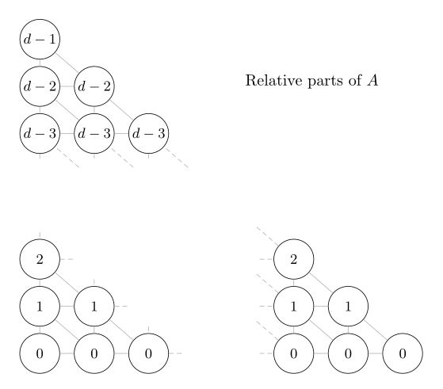

This is about how to calculate the recipes for each of the glazes in a triaxial blend, with a view to implementing this as a function in glaze software.
Suppose we want to use three glazes, A, B and C, to make a triaxial blend. It’s useful to visualise the blends as being arranged in a triangle, with A at the top, B at bottom left, and C at bottom right. We’ll call the number of glazes along each side of the triangle d. Note that d must be at least 2.
For indexing purposes, it’s convenient to modify this picture so that A lies directly above B:
The relative proportions into which A must be divided are:

while the relative proportions into which C must be divided are:
So if the index i counts the rows from the bottom to the top, starting at 0, and the index j counts the columns from left to right, starting at 0, then the glaze in row i, column j has i parts A, j parts C, and a yet-to-be-determined number k parts B. The sum of the parts for each glaze must be the same, and since A has d - 1 parts A, plus 0 parts B, plus 0 parts C, each glaze must be made of d - 1 parts. Therefore
i + j + k = d - 1,
so the glaze in row i, column j has
k = d - 1 - i - j
parts B.
To summarize: The glazes in a triaxial blend can be indexed by the coordinates of a triangular array, where the entry at position (i, j) corresponds to the blend which consists of i parts A, d - 1 - i - j parts B, and j parts C. The glazes A, B and C therefore make up the following proportions of the blend: